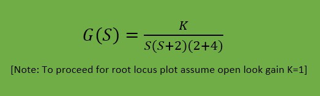
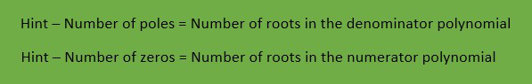
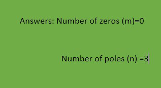

Stability Analysis of a given system Using Root Locus
Click on the equation to enter simulation!

1. In root locus plot, the breakaway points
(Choose 1 answer)
Must lie on the root loci
Must lie outside the root loci
2. How many root locus branches go towards infinity when the number of poles and zeroes is equal?
(Choose 1 answer)
Zero
One
3. Which method is considered of time-domain in control techniques?
(Choose 1 answer)
Root locus
Polar plot
Submit
Reset
Enter numer of zeroes
Enter number of poles
Check Answer
Show Answer
Next
Hint
------------

